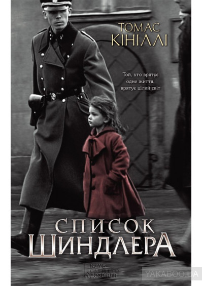

5 лучших фильмов всех времён по версии киножурнала Empire
Чтобы составить этот список, редакция журнала Empire устроила на сайте опрос, в котором смогли принять участие поклонники кинематографа со всего мира. Кроме того, Empire также обращался за помощью к известным режиссёрам, сценаристам и кинокритикам. Оригинальная подборка состоит из целой сотни фильмов, но мы решили показать вам только 5 самых-самых.
1.Крёстный отец
«Крёстный оте́ц» (англ. Mario Puzo's The Godfather) — эпическая гангстерская драма режиссёра Фрэнсиса Форда Копполы. Экранизация одноимённого романа Марио Пьюзо, изданного в 1969 году. Слоган: «Предложение, от которого невозможно отказаться». Главные роли исполняют Аль Пачино, Марлон Брандо и Джеймс Каан.
Драма, криминал.
США, 1972 год.
Длительность: 175 мин.
IMDb: 9,2.
2. Побег из Шоушенка
Культовый американский художественный фильм-драма 1994 года, снятый режиссёром Фрэнком Дарабонтом по повести Стивена Кинга «Рита Хейуорт и спасение из Шоушенка» (англ. Rita Hayworth and Shawshank Redemption) о банкире, который в результате обвинения в гибели своей жены и её любовника оказывается за решёткой и решает осуществить побег.
Драма
США, 1994 год.
Длительность: 142 мин.
IMDb: 9,3.
3.Темный рыцарь
Cупергеройский боевик с элементами неонуара режиссёра Кристофера Нолана. Вторая часть новой трилогии о Бэтмене. Главные роли в фильме исполнили Кристиан Бейл и Хит Леджер, в ролях Бэтмена и его заклятого врага — Джокера. Фильм имел огромный кассовый успех, став четвёртой картиной, собравшей более 1 миллиарда долларов, и получил восторженные отзывы, как от критиков, так и от простых зрителей, и по сей день уверенно занимая одни из первых позиций в списках лучших фильмов всех времён.В фильме одну из своих последних ролей в кино сыграл Хит Леджер.
Фантастика
США, 2008 год.
Длительность: 145 мин.
IMDb: 9,0.
4.Список Шиндлера
 Историческая драма режиссёра Стивена Спилберга 1993 года о немецком бизнесмене и члене НСДАП Оскаре Шиндлере, спасшем более тысячи польских евреев от гибели во время Холокоста.[2] Основан на романе Томаса Кенилли «Ковчег Шиндлера».Слоганом фильма была выбрана цитата из Талмуда: «Тот, кто спасает одну жизнь, спасает целый мир».
Драма
США, 1993 год.
Длительность: 195 мин.
IMDb: 8,9.
5.Криминальное чтиво
Культовый кинофильм режиссёра Квентина Тарантино. Сюжет фильма нелинеен, как и почти во всех остальных работах Тарантино. В фильме рассказывается несколько историй, в которых показаны ограбления, философские дискуссии двух гангстеров, спасение девушки от передозировки наркотиков и боксёр, которого задели за живое. Название является отсылкой к популярным в середине XX века в США pulp-журналам.Фильм постоянно находится в первой десятке списка лучших 250 фильмов на сайте IMDb
 «Крёстный оте́ц» (англ. Mario Puzo's The Godfather) — эпическая гангстерская драма режиссёра Фрэнсиса Форда Копполы. Экранизация одноимённого романа Марио Пьюзо, изданного в 1969 году. Слоган: «Предложение, от которого невозможно отказаться». Главные роли исполняют Аль Пачино, Марлон Брандо и Джеймс Каан.
«Крёстный оте́ц» (англ. Mario Puzo's The Godfather) — эпическая гангстерская драма режиссёра Фрэнсиса Форда Копполы. Экранизация одноимённого романа Марио Пьюзо, изданного в 1969 году. Слоган: «Предложение, от которого невозможно отказаться». Главные роли исполняют Аль Пачино, Марлон Брандо и Джеймс Каан.  Культовый кинофильм режиссёра Квентина Тарантино. Сюжет фильма нелинеен, как и почти во всех остальных работах Тарантино. В фильме рассказывается несколько историй, в которых показаны ограбления, философские дискуссии двух гангстеров, спасение девушки от передозировки наркотиков и боксёр, которого задели за живое. Название является отсылкой к популярным в середине XX века в США pulp-журналам.Фильм постоянно находится в первой десятке списка лучших 250 фильмов на сайте IMDb
Культовый кинофильм режиссёра Квентина Тарантино. Сюжет фильма нелинеен, как и почти во всех остальных работах Тарантино. В фильме рассказывается несколько историй, в которых показаны ограбления, философские дискуссии двух гангстеров, спасение девушки от передозировки наркотиков и боксёр, которого задели за живое. Название является отсылкой к популярным в середине XX века в США pulp-журналам.Фильм постоянно находится в первой десятке списка лучших 250 фильмов на сайте IMDb